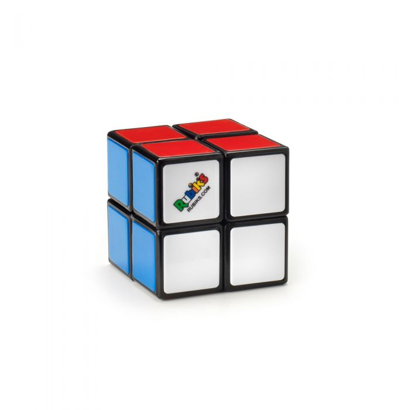
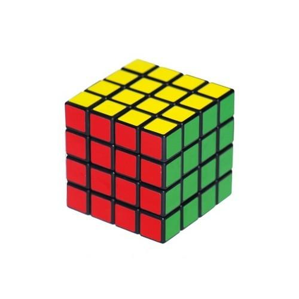
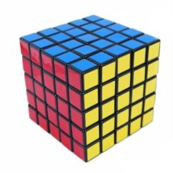
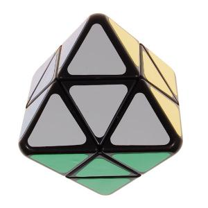
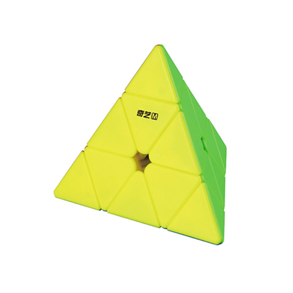
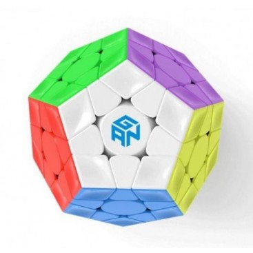

A Rubik-kockának létezik kisebb illetve nagyobb elemszámból álló változatai is.
|  |  |  |
| 2x2x2 | 4x4x4 | 5x5x5 |
Legnagyobb forgalomban lévő változat 25x25x25-ös méretű.
Léteznek kockától eltérő változatok is. Gyakran a kirakásának folyamata rendkívül hasonlít a sima kockáéhoz, így egyszerűbben meg lehet tanulni, ha a kockát már ki tudjuk rakni.
|  |  |  |
| skewb gyémánt | pyraminx | megaminx |